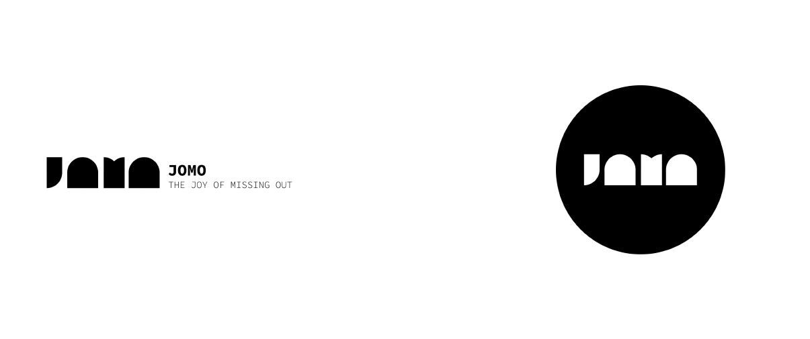

Mid-2021, I got the opportunity to help make branding, packaging and visuals for JOMO. They are a start-up candle company based in Montreal. Their products are candles made from soy wax with scents inspired by tea and Asian culture. From this project, I was able to craft a vast variety of logo options for them. This is a list of my favorites!
I wanted to make a playful logo that fully expressed the joy of missing out while being able to blend in elements of tea with the tea leaf. When consulting the client on their ideas and inspirations for branding, some of the keywords they used were: cartoon-like, youthful and happy. These are the concepts I tried to capture with this first logo.
This next logo derives from the first. I wanted to emphasize on the smile aspect and stray away from the circular structure that the first one has. With the colors below, I went with something more fruity and pop-ish to have a more cheerful and joyous effect.
For this logo, I went with the idea of mixing concepts of relaxation and tea together. The shape represents a closed eye and a tea leaf. In addition to the icon, I played around with a more inviting and organic font.

This logo was out of the box and I wanted to try a more classic look to break away from their competition. I went with something more modern and classic. Reminiscent of the vibe and calmness you would find in an art gallery.
This last logo from this logofolio was the one the clients ended up choosing. I went with something more hand-drawn and free-flowing. Color played a big role in shifting the vibe of this logo. The colors really brought the logo to another level and made it vibrant.